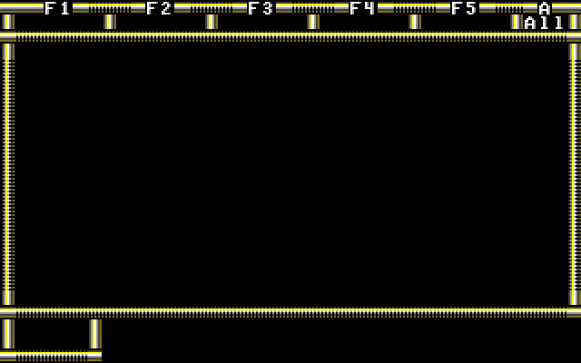

The Fountain of Dreams palette is stored in the executable. Every byte represents a 6-bit VGA value (0-0x3F). Every 3 bytes represents a single color. It is stored like this:
06B2:0CD2 00 00 00 00 00 27 03 25 03 00 1B 1B 20 00 00 1B
06B2:0CE2 00 1B 20 1B 05 26 26 26 10 10 10 00 00 38 00 3F
06B2:0CF2 00 00 3F 3F 3A 20 10 3F 00 3F 3F 3F 00 3F 3F 3F
The VGA palette is then set in the following ways so that every 16 entries are the same color. Essentially only the high nibble matters.
| Color 0x00-0x0F | 00, 00, 00 | |
| Color 0x10-0x1F | 00, 00, 27 | |
| Color 0x20-0x2F | 03, 25, 03 | |
| Color 0x30-0x3F | 00, 1B, 1B | |
| Color 0x40-0x4F | 20, 00, 00 | |
| Color 0x50-0x5F | 1B, 00, 1B | |
| Color 0x60-0x6F | 20, 1B, 05 | |
| Color 0x70-0x7F | 26, 26, 26 | |
| Color 0x80-0x8F | 10, 10, 10 | |
| Color 0x90-0x9F | 00, 00, 38 | |
| Color 0xA0-0xAF | 00, 3F, 00 | |
| Color 0xB0-0xBF | 00, 3F, 3F | |
| Color 0xC0-0xCF | 3A, 20, 10 | |
| Color 0xD0-0xDF | 3F, 00, 3F | |
| Color 0xE0-0xEF | 3F, 3F, 00 | |
| Color 0xF0-0xFF | 3F, 3F, 3F |
The game uses various files that contain assets. They are listed in the below table.
| File | Description |
|---|---|
| BORDERS | Contains a set of 5 borders that are used in various parts of the UI. Each border takes up
exactly 1000 bytes (40 * 25 * 1) and references a font byte. 0 - Main game border 5 - Character creation/selection border. |
| FONT | Contains the font sprites used within the game. |
| TILES | Contains the tile sprites used within the game map. |
The game has various screens which use different sets of borders (which contains 5 different border types). The main game UI uses border #0 as shown below:
